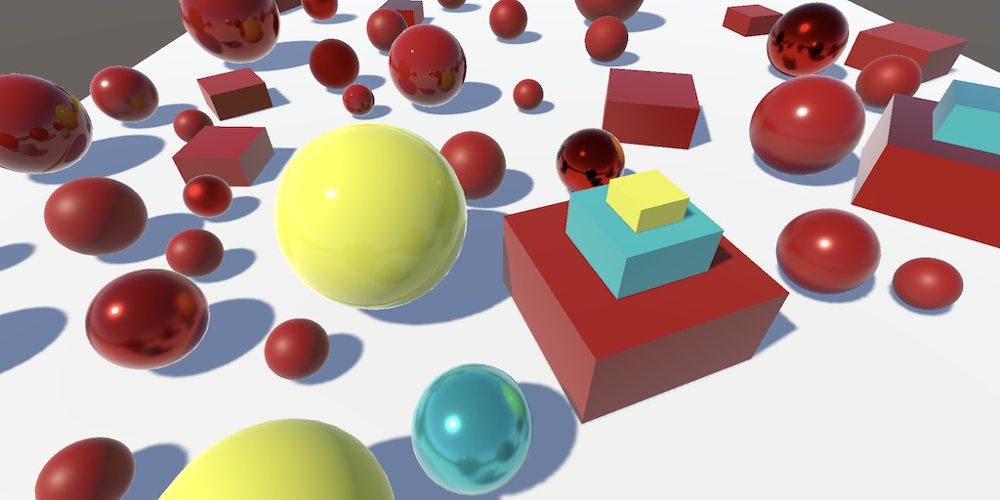
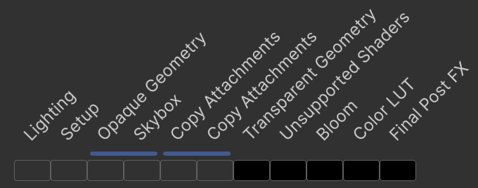
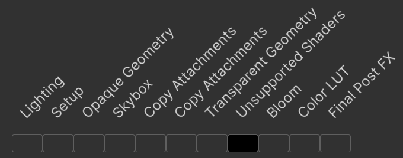
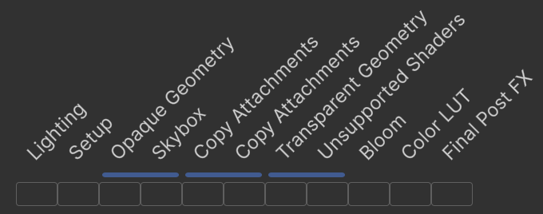

Custom SRP 6.0.0
Unity 6.3

This tutorial is made with Unity 6000.3.1f1 and follows Custom SRP 5.1.0.
Unity Upgrade
We're going to make the jump to Unity 6.3, upgrading our own RP to version 6.0.0. Importing the project in Unity 6.3 will initially break a few things that require fixing. We're greeted by broken scene and game viewports because we fail to render the final image. The Render Graph Viewer doesn't provide any useful information either, because it also stopped working. This time we'll focus on that, making the changes necessary to get things functional again.
First, check via the Package Manager that we have upgraded Burst to version 1.8.27, Mathematics to version 1.3.3, and Scriptable Render Pipeline Core to version 17.3.0.
Entity Identifiers
Before we move on to fixing the rendering we'll get rid of the obsolete API warnings that we get. These warnings relate to the new usage of low-level entity identifiers for the cameras and the lights.
We're using the camera's name for the executionName of the render graph parameters in CameraRenderer.Render, but this has become obsolete. We should now set executionId instead, by calling GetEntityId() on the camera.
var renderGraphParameters = new RenderGraphParameters
{
commandBuffer = CommandBufferPool.Get(),
currentFrameIndex = Time.frameCount,
// executionName = cameraSampler.name,
executionId = camera.GetEntityId(),
rendererListCulling = true,
scriptableRenderContext = context
};
We also have to make a similar change in the lights delegate of the CustomRenderPipeline editor partial class. In this case we have to replace the invocation of GetInstanceId() on the light with GetEntityId().
default: lightData.InitNoBake(light.GetEntityId()); break;
This gets rid of the obsolete warnings.
Render Graph Viewer
Next, we're going to fix the render graph viewer. It currently doesn't work and instead it indicates that it's waiting for the selected camera to render. This message isn't helpful, because we are rendering, although it fails. The issue in this case is that we now have to explicitly indicate that we want the render graph to generate debug data, which is needed by the render graph viewer.
To turn on the generation of debug data we have to set generateDebugData of the render graph parameters to true in CameraRenderer.Render. Only when we do this and also set the execution identifier will the render graph viewer become functional again.
executionId = camera.GetEntityId(), generateDebugData = true,

Now we can see the render graph passes again. I'm rendering the Particles scene and the problem is now visible: all passes after copying attachments are culled.
Before we move on to fixing the passes, we should consider why we now have to explicitly enable the generation of debug data. This change has been made by Unity so nonessential cameras can be skipped, specifically those that fall outside regular render loop. In URP the preview cameras and manually requested camera renderings are skipped. Let's do the same, by only enabling it when we won't have a preview camera and we're not processing a manual render request, which can be checked via the camera's isProcessingRenderRequest property.
generateDebugData = camera.cameraType != CameraType.Preview && !camera.isProcessingRenderRequest,
Native Render Passes
We've been incrementally upgrading our RP to work with the latest Render Pipeline API, working towards fully supporting native render passes, but we hadn't completed that process yet. In Unity 6.3 native render passes have been enabled by default, which is why our rendering fails. The quickest way to fix rendering would be to disable native render passes, by setting the nativeRenderPassesEnabled property of the render graph to false before recording.
renderGraph.nativeRenderPassesEnabled = false; renderGraph.BeginRecording(renderGraphParameters);

This indeed fixes our RP and it again renders as before. However, let's from now on keep native render passes enabled and instead make the required changes to fully support them.
//renderGraph.nativeRenderPassesEnabled = false;
The issue that we have to fix is that when native render passes are enabled everything after the copy attachment passes gets culled. This happens because we don't inform the render graph that we're using the back buffer that we render to. Hence those passes are deemed to not generate useful results and get culled. So the quickest way to fix things would be to disable culling for the final passes. But let's do it the appropriate way and properly register the camera target as a texture handle and use that for the final draw.
As post FX are used in the Particles scene, let's adapt PostFXStack.DrawFinal to work with a given TextureHandle for the camera target, instead of directly using BuiltinRenderTextureType.CameraTarget when invoking SetRenderTarget.
public void DrawFinal(
UnsafeCommandBuffer buffer,
TextureHandle from,
TextureHandle cameraTarget,
Pass pass)
{
…
buffer.SetRenderTarget(
cameraTarget,
…);
…
}
We now have to provide that handle in PostFXPass.Render, so add a field for it and use it when invoking DrawFinal.
TextureHandle colorSource, colorGradingResult, scaledResult, cameraTarget;
…
void Render(UnsafeGraphContext context)
{
…
if (scaleMode == ScaleMode.None)
{
stack.DrawFinal(buffer, finalSource, cameraTarget, finalPass);
}
else
{
…
stack.DrawFinal(
buffer, scaledResult, cameraTarget, Pass.FinalRescale);
}
}
Set up the camera target in Record by invoking ImportBackbuffer on the render graph for BuiltinRenderTextureType.CameraTarget. Let's conservatively use it with both read and write permissions so all draw modes will work. We can refine this in the future.
builder.UseTexture(colorSource); builder.UseTexture(colorLUT); pass.cameraTarget = renderGraph.ImportBackbuffer(BuiltinRenderTextureType.CameraTarget); builder.UseTexture(pass.cameraTarget, AccessFlags.ReadWrite);

We're now correctly rendering with native render passes enabled. The Render Graph Viewer now also shows us which passes get merged, indicated via blue bars below their names. First, the opaque geometry and skybox passes get merged, which makes sense as they render to the same targets. Second, both copy passes get merged even though they render to different targets. They can get merged because we're rendering to color and depth separately, so it's a single color-depth buffer pair. Third, transparent geometry and unsupported shaders also get merged. The passes after that don't get merged because they are not raster render passes. You can also inspect the additional pass information provided by the Render Graph Viewer, which mentions why passes were or were not merged.
We also have to make these changes for the render path that doesn't use post FX. In that case we use CameraRendererCopier.CopyToCameraTarget, so give it a parameter for the camera target handle as well.
public readonly void CopyToCameraTarget(
UnsafeCommandBuffer buffer,
TextureHandle from,
TextureHandle cameraTarget)
{
…
buffer.SetRenderTarget(
cameraTarget,
…);
…
}
Then adjust FinalPass like we adjusted PostFXPass.
TextureHandle colorAttachment, cameraTarget;
void Render(UnsafeGraphContext context)
{
UnsafeCommandBuffer buffer = context.cmd;
copier.CopyToCameraTarget(buffer, colorAttachment, cameraTarget);
}
public static void Record(…)
{
…
pass.cameraTarget =
renderGraph.ImportBackbuffer(BuiltinRenderTextureType.CameraTarget);
builder.UseTexture(pass.cameraTarget, AccessFlags.ReadWrite);
builder.SetRenderFunc<FinalPass>(
static (pass, context) => pass.Render(context));
}
Exception Handling
One more change that we're going to make is to improve handling of exceptions that occur during recording and execution of the render graph. The preferred approach is to try rendering all cameras and if an exception is raised to catch it, invoke ResetGraphAndLogException() for it on the render graph to clean things up, and then throw the exception further up the execution stack. We do this in CustomRenderPipeline.Render.
protected override void Render(
ScriptableRenderContext context, List<Camera> cameras)
{
try
{
for (int i = 0; i < cameras.Count; i++)
{
renderer.Render(renderGraph, context, cameras[i], settings);
}
}
catch(Exception e)
{
if (renderGraph.ResetGraphAndLogException(e))
{
throw;
}
}
renderGraph.EndFrame();
}
Rendering Layer Mask
Finally, because we incremented our RP's major version let's refactor rename the newRenderingLayerMask field to again just renderingLayerMask in CameraSettings. To keep the old configuration apply the FormerlySerializedAs attribute to it. We can do this now because it has been multiple version ago that the original field was used so its old data should no longer be part of the scene data. If in doubt, open all old scenes before refactoring, make a change and save them to clear the data. You can also inspect the save file data directly to check whether any old renderinglayerMask values are still there for the CameraSettings data.
[UnityEngine.Serialization.FormerlySerializedAs("newRenderingLayerMask")]
public RenderingLayerMask renderingLayerMask = -1;
We'll add debug visualization for the color LUT in the next tutorial, which is Custom SRP 6.1.0.
license repository PDF